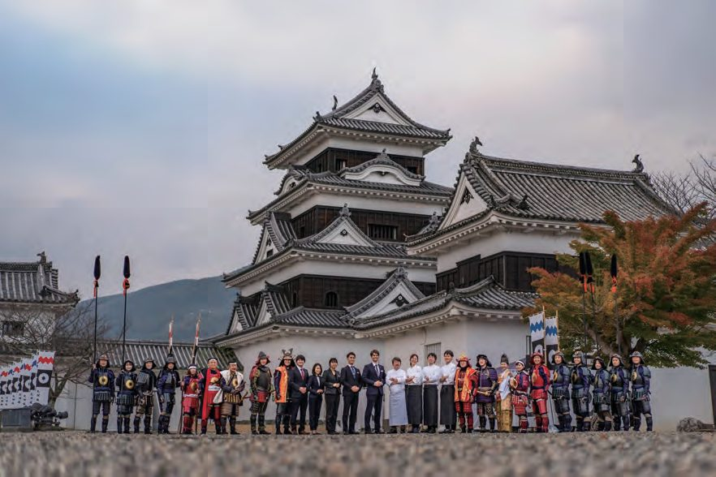

どんな人に会える？
まちをつくっているのは、会いに行ける距離にいる人たちです。
このページの中
いまの城下町の真ん中には、一度まちを出て、戻ってきた人たちがいます。分類ごとに横に送れます。押すと、その人の紹介が開きます。
町家を改装して開いた店と宿。多くは、この10年で城下町に入ってきた人たちです。
菓子・酒・ビール・絹・木工。大洲の素材で、ものをつくっている人たち。
鵜飼・鉄砲隊・神楽。まちの行事を担っている人たち。
空き家の再生、案内、発信、行事づくり。まちの仕組みを動かしている人たち。
長浜・河辺・柳沢・肱川。海と山の大洲にも、会いに行ける人がいます。
体験の先にいるのは、いつも人です。宿のスタッフ、店主、鵜匠、菓子舗の五代目。大洲を再訪する人の多くは、景色ではなく人に会いに戻ってきます。
店を営む人には、店が開いている日に会えます。
営業日・営業時間は Visit Ozu の店の紹介（掲載した時点のもの）によります。祝日は変わることがあります。
出どころ
人の紹介5人の紹介は「大洲まちづくりブック」（2026年5月・一般社団法人キタ・マネジメント発行）掲載のインタビューをもとにしています（Uターンの札と経歴の1行も同じ）。名鑑は、大洲まちづくりブック・大洲カンパニー「大洲のひと」・Visit Ozu・大洲ええモンセレクション・キタ・マネジメントの集計をもとにしています（9月28日に確認）。OZU STORIES は Visit Ozu・キタ・マネジメントの案内によります。
写真名鑑の写真は、大洲カンパニー「大洲のひと」・Visit Ozu・大洲城（いずれも一般社団法人キタ・マネジメント運営）・大洲まちづくりブックと、各店の公式サイトの掲載写真です。写真の帯と記事の写真は大洲まちづくりブックより。名鑑の写真の一部は OZU 555 PROJECT 写真共有フォルダ（セキ撮影ほか）より。
商舗・廊 村上邸（Sa-Rah）
「目指すのは、『OZU, JAPAN』。」
大洲市出身。前職は銀行員。大学進学で一度大洲を離れ、Uターン就職ののち、子ども服づくりをきっかけにブランド「Sa-Rah」を立ち上げました。2009年に店舗を開き、増える空き家に危機感を持って古民家活用のクラフトイベントを開催すると、大きな反響がありました。
2020年には築170年の古民家「村上邸」のオーナーとなり、自身が心地よいと感じる空間を実践しています。観光客が増えるなか、人とのコミュニケーションを通じて「また来たい」と思っていただける場をつくることが、大洲ならではの魅力だと考えています。
会える場所：商舗・廊 村上邸
大洲まちづくりブック（2026年5月）掲載のインタビューより

OZU+（オオズプラス）
「サステナブルを実感できるまちに。」
大洲市出身。旅行会社、外資系ホテル勤務を経てIKEUCHI ORGANICに入社。タオルを大洲で使ってほしいとセールスに訪れた際に町家再生のプロジェクトを知り、翌年には自らNIPPONIA MUNE棟に店「OZU+」を開いていました。「帰郷する予定は全くなかった」といいます。
いま伝えたいのは、これからの大洲には可能性しかないということ。「Uターンや移住を考える人には、受け身ではなく、自分自身で働く場所や居場所をつくる提案をしてほしい。肱川の舟をもっと活用できれば、大洲に行くとサステナブルを実感できる、そんなまちになれたら」。
会える場所：OZU+（NIPPONIA MUNE棟）
大洲まちづくりブック（2026年5月）掲載のインタビューより
冨永松栄堂（老舗菓子舗・五代目）
「まちを好きになり、物語を紡ぐ。」
大洲市出身。京都の菓子司・末富で修業したのち家業に戻り、老舗の五代目として大洲の菓子文化を継いでいます。先代は大洲市観光協会会長を務め、親子2代で大洲城の木造復元にも尽力してきました。
「商いを通じてまちの物語を紡いでいくことも、一つの使命だと感じています。まちづくりで一番大事なことは、そこに暮らしている人が自分のまちを好きになること。まちを誇りに思う人が増え、そこに同じ意識を持つ人が集まってくれば、きっとさらに良いまちになる」。
会える場所：冨永松栄堂
大洲まちづくりブック（2026年5月）掲載のインタビューより

菅野建設株式会社
「使いながら、未来に残したい。」
大洲市出身。大洲城の天守復元や臥龍山荘の改修工事など、数多くの古建築の改修に携わってきた会社を率います。「このプロジェクトの難しさは、建て直すのでも元に戻すのでもなく、今あるままの状態で残すこと。想像以上に手間も時間もかかる仕事です」。
「それでも携わっているのは、やはり建物自体が好きだから。江戸・明治・大正・昭和の建物が点在する町並みを残していく仕事は、誰かがやらなければならない仕事であり、それはやはり地元の人間がやるべきだと思うのです」。技の継承とともに、「感性を継承していく」ことを自らの役割と語ります。
大洲まちづくりブック（2026年5月）掲載のインタビューより
大洲市長
「若者が誇れるふるさとに。」
大洲市出身。教育長時代には、大洲の子どもたちに自然・文化・歴史・食文化を伝える歴史副読本をつくった人です。シビックプライド——自分のまちへの誇り——を育むことを、教育の頃から一貫して考えてきました。
市長として人口減少や空き家対策など多くの課題に向き合いながら、最も望んでいるのは「大洲の魅力を世界に発信することで、足元にあるまちの良さに気づいてもらい、若者が誇りに思うまちにしていくこと」。474もの支流を集めて大洲盆地から伊予灘へと注ぐ肱川にも注目し、城下町だけでなく流域の自然や文化資源まで、観光まちづくりをさらに奥行きのある事業にしようとしています。
大洲まちづくりブック（2026年5月）掲載のインタビューより
NIPPONIA HOTEL 大洲 城下町 シェフ
2020年の開業と同時にシェフに就き、大洲の食材で料理をつくる。
会える場所：NIPPONIA HOTEL 大洲 城下町のレストラン
写真：OZU 555 PROJECT 写真共有フォルダ（セキ撮影）
酒乃さわだ 店主
1995年に酒店を開き、2021年に城下町の小倉邸を開いた。肱川町で無農薬の酒米を育て、地元の酒蔵と日本酒をつくる。
会える場所：酒乃さわだ 小倉邸（肱南地区）
写真：大洲カンパニー「大洲のひと」
はたご屋 霧中／Cafe&Bar 霧隠れ
会社員から転じて臥龍山荘で働き、古民家を守る活動を経て宿とバーを開いた。夏は鵜飼の船頭も務める。
会える場所：Cafe&Bar 霧隠れ（大洲市大洲146）
営業日・営業時間（Visit Ozu の店の紹介より）11:00〜16:00（L.O.15:00）
定休日：火・水
※夜は「はたご屋 霧中」に宿泊者がいる日は営業ありで不定休
写真：Visit Ozu
葵CAFE
NIPPONIA HOTEL のそばの長屋を改装したカフェ。
会える場所：葵CAFE（大洲市大洲392）
営業日・営業時間（Visit Ozu の店の紹介より）11:30〜16:00
定休日：火〜木（祝日の場合営業）
写真：Visit Ozu
大洲炉端 油屋
ご当地の料理から炉端焼きまで。
会える場所：大洲炉端 油屋（大洲市大洲42）
営業日・営業時間（Visit Ozu の店の紹介より）昼 11:30～14:00（L.O.14:00）／夜 18:00～23:00（L.O.22:00）
定休日：月（祝日の場合は営業、翌火曜日が休み）
お席のみの予約も可能なので、事前にお電話でお問い合わせください。
写真：Visit Ozu
羅り瑠れ櫓（らりるれろ）
大洲城から歩いて5分の和風カフェ。
会える場所：羅り瑠れ櫓（大洲市大洲727）
営業日・営業時間（Visit Ozu の店の紹介より）11:00～18:00
定休日：月曜日（祝日の場合は翌火曜日）
写真：Visit Ozu
いづみや
大洲の郷土料理を出す老舗の割烹。
会える場所：いづみや（大洲市大洲382）
営業日・営業時間（Visit Ozu の店の紹介より）11:00〜L.O.13:30／17:00〜22:00（ドリンクL.O.21:00）
定休日：火曜
※夜は前日までの完全予約制
写真：Visit Ozu
大正期の薬局を改装したカフェ。
会える場所：大洲市大洲31
写真：Visit Ozu
NIPPONIA の棟に入る和風カフェと珈琲店。川久保珈琲店は高知から、柊は2025年11月に開業。
会える場所：NIPPONIA MUNE棟・YUKI棟・ZUMI棟
写真：NIPPONIA HOTEL 大洲 城下町
一棟貸しの古民家の宿。燈はオーナー自ら改修し、まろや四季は県外から移り住んだ人が営む。
会える場所：城下町
写真：城下の宿 燈 TOMOSHIBI
古い医院を小さな区画に分け、雑貨・つまみ細工・天然石などの店が入る。
会える場所：旧藤本医院
写真：Visit Ozu
九州の地域文化商社が、旧病院を改装して2023年に開いた店。
会える場所：城下町
写真：うなぎの寝床
江戸から続く郷土菓子・志ぐれを、それぞれの店の味でつくる。村田文福老舗は1624年創業、旧大洲藩の御用菓子司。
会える場所：城下町と市内の各店
城下町の煉瓦倉庫でクラフトビールを醸造する。
会える場所：大洲市大洲98-1
営業日・営業時間（Visit Ozu の店の紹介より）月・木 11:00～16:00／金・土 11:00～21:00（19:00以降は予約のみ）／日 11:00～18:00／※フードメニューのラストオーダーは閉店1時間前／ドリンクメニューのラストオーダーは閉店30分前
定休日：火・水
金曜日・土曜日の夜の営業は予約制で、予約のない日は19:00クローズです。コース料理をいただかない場合でも、必ずお電話にてご予約くださいね。
写真：Visit Ozu
1921年創業。愛媛県産米だけで、肱川とともにある酒をつくる。
会える場所：肱川町山鳥坂
写真：OZU 555 PROJECT 写真共有フォルダ
自分の畑の桑で蚕を育て、繭を出荷する。
会える場所：大洲市多田
四国の杉と檜の間伐材で、下駄や木の雑貨を手でつくる。
会える場所：大洲市長浜町

夏の肱川で鵜を操る。2026年から3人体制になり、新しい鵜匠がデビューした。
会える場所：肱川（6月〜9月）
写真：OZU 555 PROJECT 写真共有フォルダ
キャッスルステイのお客さまを迎える、地域の伝統芸能の担い手。
会える場所：大洲城キャッスルステイほか
写真：OZU 555 PROJECT 写真共有フォルダ
キタ・マネジメント CMO／株式会社KITA 代表
古民家の再生事業を率い、35棟を超える空き家の再生に関わってきた。
会える場所：大洲まちの駅あさもや
写真：大洲カンパニー「大洲のひと」
キタ・マネジメント 代表理事
大洲の観光地域づくり法人（DMO）の代表。伊予銀行営業本部の参与も務める。
会える場所：大洲まちの駅あさもや
肱南地区町並み活用イベント実行委員会 会長／ROY'S
レストランを営み、古い建物を活かした店づくりを手がける。城下のMACHIBITOの会長。
会える場所：ROY'S
写真：大洲カンパニー「大洲のひと」
2017年に地元の若者が結成。空き家の掃除・風入れ・障子の張り替えで傷みを遅らせ、再生の道をつくった。
会える場所：城下町
写真：大洲まちづくりブック
河辺に住む人を増やすため、特産品を開発して発信する。
会える場所：大洲市河辺町